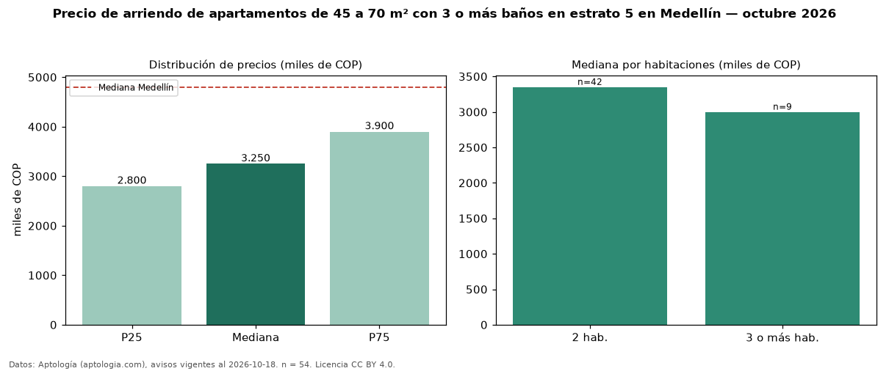

Precio de arriendo de apartamentos de 45 a 70 m² con 3 o más baños en estrato 5 en Medellín — octubre 2026
Con 54 avisos vigentes, el canon mediano de apartamentos de 45 a 70 m² con 3 o más baños en estrato 5 en arriendo en Medellín es COP 3,25 millones al mes. Prácticamente coincide con la mediana de los apartamentos de 45 a 70 m² en estrato 5 en arriendo de Medellín (COP 3,30 millones, n = 835); este segmento reúne el 6 % de esos avisos. Por metro cuadrado, la mediana es COP 48.333/m² al mes (n = 49), 11 % por debajo de los apartamentos de 45 a 70 m² en estrato 5 en arriendo de Medellín (COP 54.264/m²). El área mediana anunciada es 62 m². El segmento con más oferta es el de 2 habitaciones (42 avisos, mediana COP 3,35 millones); pasar de 2 habitaciones a 3 o más habitaciones cambia la mediana −10 %. La mediana de todos los apartamentos en arriendo de Medellín es COP 4,80 millones (−32 % de diferencia). 21 % de los avisos con el dato declara parqueadero. La mitad central de los avisos va de COP 2,80 millones a COP 3,90 millones (razón 1,4), una dispersión baja. Datos: Aptología (aptologia.com), CC BY 4.0 — https://www.aptologia.com/arriendo/medellin. Archivos: PDF, CSV con las cifras y gráfica PNG.

| Avisos únicos | 54 |
|---|---|
| Percentil 25 | COP 2.800.000 |
| Mediana | COP 3.250.000 |
| Percentil 75 | COP 3.900.000 |
| Mediana por m² | COP 48.333 |
Fuente: avisos vigentes de portales inmobiliarios recopilados por Aptología, deduplicados (mínimo 30 avisos únicos por celda). Precios pedidos, no cerrados. Fecha: 2026-10-18.